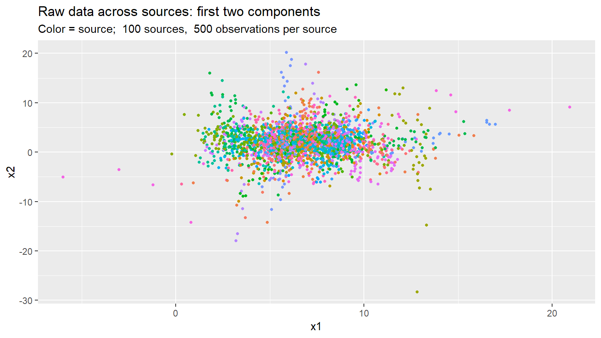

prior_elicitation.Rmdset.seed(1337)
library(bayessource)
requireNamespace('mvtnorm')
#> Loading required namespace: mvtnormLet’s generate a test dataset with known parameters.
We will use some supporting functions:
# Generate n random integers in {min, ..., max}
randi <- function(n, min, max) { round(runif(n, min, max)) }
#' Generate random invertible symmetric pxp matrix
#'
#' @param p matrix size
#' @param alpha regularization > 0
randinvmat <- function(p, M = 5, alpha = NULL) {
stopifnot(p > 0)
stopifnot(M > 0)
if (is.null(alpha)) {
alpha <- p + 1
} else {
stopifnot(alpha > 0)
}
M * stats::rWishart(1, p + alpha, diag(p))[,,1]/(p + alpha)
}
# Compute inverse of X if X is sympd
solve_sympd <- function(X) {
chol2inv(chol(X))
}We will generate the data according to the model: for sources \(i = 1, \ldots, m\),
\[X_{ij} \; | \; \theta_i, \; W_i \sim \quad N_p(\theta_i, W_i) \quad \forall j = 1, \ldots, n \] \[\theta_i \; | \; \mu, B \sim \quad N_p(\mu, B)\] \[W_i \; | \; U, n_w \sim \quad IW(U, n_w)\]
Upper hierarchical level: generate \(\mu\), \(n_w\), \(B\), \(U\)
list_exact <- list()
list_exact$B.exact <- randinvmat(p, alpha=2) # Between Covariance matrix
list_exact$U.exact <- randinvmat(p, alpha=2) # Inverted Wishart parameter
list_exact$mu.exact <- randi(p, 0, 10) # mean of means
list_exact$nw.exact <- 2*(p + 1) + 1 # dof for Inverted Wishart, as small as possibleMiddle hierarchical level: for every source generate
theta.sources.exact <- list()
for (i in seq(m)) {
theta.sources.exact[[i]] <- mvtnorm::rmvnorm(1, list_exact$mu.exact, list_exact$B.exact)
}
W.sources.exact <- list()
for (i in seq(m)) {
# Equivalents:
# W.sources.exact[[i]] <- solve(rWishart(1, nw.exact, solve(U.exact))[,,1])
W.sources.exact[[i]] <- bayessource::riwish_Press(list_exact$nw.exact, list_exact$U.exact)
}Lower hierarchical level: raw data from every source
df <- list()
for (i in seq(m)) {
# The data
df[[i]] <- mvtnorm::rmvnorm(n, theta.sources.exact[[i]], W.sources.exact[[i]])
# The source (last column)
df[[i]] <- cbind(df[[i]], i)
}
df <- data.frame(do.call(rbind, df))
colnames(df) <- paste(c(paste0('v', seq(1:p)), 'source'))The item column is the last one (p + 1).
First two components across sources:
library(ggplot2)
df_sub <- df[sample(1:nrow(df), nrow(df) * 0.05, replace = FALSE), ]
ggplot(df_sub, aes(x = v1, y = v2, col = factor(source))) +
geom_point(size = 1, show.legend = FALSE) +
labs(x = 'x1', y = 'x2', title = 'Raw data across sources: first two components',
subtitle = paste('Color = source; ', m, 'sources, ', n, 'observations per source'))
The package supplies the function make_priors_and_init.
Suppose that df represents a background dataset.
We can use it to elicit the model hyperparameters:
col.variables <- 1:p
col.item <- p + 1
use.priors <- 'ML'
use.init <- 'random'
priors <- make_priors_and_init(df, col.variables, col.item, use.priors, use.init)
names(priors)
#> [1] "mu" "U" "B.inv" "nw" "W.inv.1" "W.inv.2"\[ \mu = \begin{bmatrix} 6.8433 \\ 2.0367 \\ 0.8760 \\ 3.0164 \\ \end{bmatrix} \]
Exact:
\[ \mu = \begin{bmatrix} 7.0000 \\ 2.0000 \\ 1.0000 \\ 3.0000 \\ \end{bmatrix} \]
\[ B^{-1} = \begin{bmatrix} 1.1402 & 0.9907 & -0.7688 & -0.0829 \\ 0.9907 & 2.1191 & -0.8502 & 0.1742 \\ -0.7688 & -0.8502 & 0.8426 & -0.0993 \\ -0.0829 & 0.1742 & -0.0993 & 0.1968 \\ \end{bmatrix} \]
Exact:
\[ B^{-1} = \begin{bmatrix} 0.9970 & 0.9335 & -0.7219 & 0.0117 \\ 0.9335 & 2.0978 & -0.7957 & 0.1698 \\ -0.7219 & -0.7957 & 0.7742 & -0.1125 \\ 0.0117 & 0.1698 & -0.1125 & 0.1440 \\ \end{bmatrix} \]
\[ W_i \sim IW(n_w, U) \] \[ n_w = 11 \]
\[ U = \begin{bmatrix} 1.3071 & 1.4024 & -1.6232 & 0.5583 \\ 1.4024 & 10.9605 & -3.9357 & -1.6787 \\ -1.6232 & -3.9357 & 12.1624 & 2.7959 \\ 0.5583 & -1.6787 & 2.7959 & 3.7453 \\ \end{bmatrix} \]
Exact:
\[ U = \begin{bmatrix} 0.9172 & 1.1136 & -1.1124 & 0.5796 \\ 1.1136 & 11.4074 & -3.4977 & -1.5801 \\ -1.1124 & -3.4977 & 12.3324 & 2.6193 \\ 0.5796 & -1.5801 & 2.6193 & 3.9750 \\ \end{bmatrix} \]
Within covariance matrices and their inverses: we initialize the chain with
\[ W^{-1}_1 = \begin{bmatrix} 28.0757 & -5.2874 & 6.5017 & -15.1681 \\ -5.2874 & 1.7458 & -0.7851 & 3.5079 \\ 6.5017 & -0.7851 & 1.8089 & -3.0582 \\ -15.1681 & 3.5079 & -3.0582 & 10.1268 \\ \end{bmatrix} \]
\[ W^{-1}_2 = \begin{bmatrix} 28.0757 & -5.2874 & 6.5017 & -15.1681 \\ -5.2874 & 1.7458 & -0.7851 & 3.5079 \\ 6.5017 & -0.7851 & 1.8089 & -3.0582 \\ -15.1681 & 3.5079 & -3.0582 & 10.1268 \\ \end{bmatrix} \]